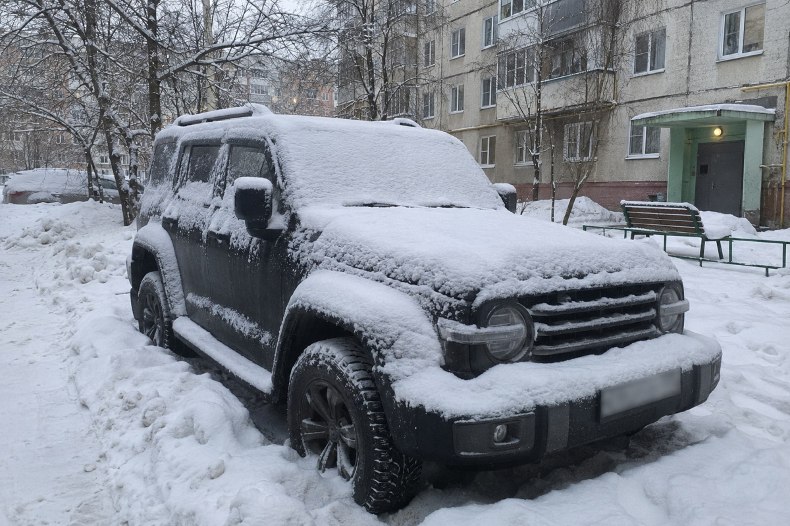
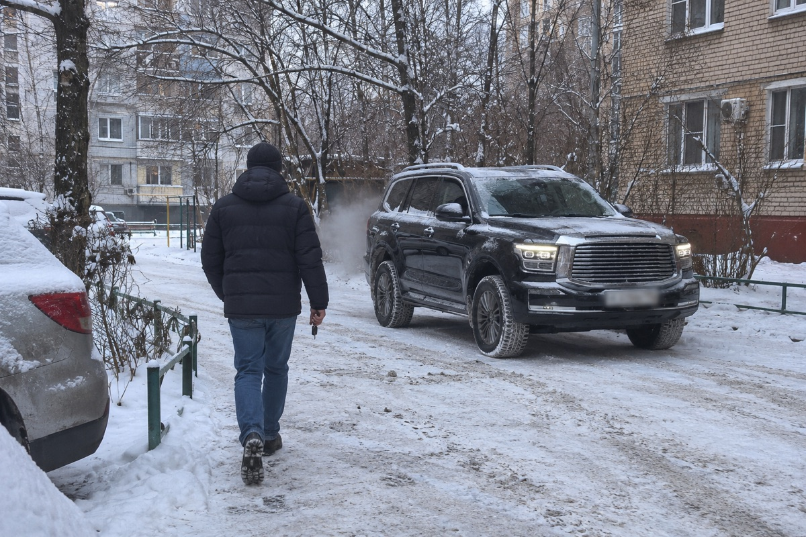

StarLine на Tank: что база говорит про 300, 400, 500 и 700
StarLine на Tank 300, 400, 500 и 700 по базе производителя не требует оставлять ключ в машине: у всех четырёх моделей отмечены обход без ключа и запуск по CAN. У Tank 300 в базе стоит пометка «блок рулевого вала», её мы смотрим при осмотре. Ставить есть смысл, если машина ночует на улице, а штатное приложение не подключается.
Содержание
Что база StarLine пишет про Tank

Мы сверили Tank по базе can.starline.ru, снимок от 25 октября 2026 года. Во всех строках по 300, 400, 500 и 700 стоят две отметки: обход без ключа и запуск по CAN.
Первая отметка значит, что запасной ключ в салоне прятать не надо. Вторая значит, что база показывает запуск через цифровую шину машины.
Перед работой мастер сверяет год и версию вашей машины с комплектом.
Tank 300, 400, 500 и 700: что у каждой модели
Tank 300
Самая массовая модель марки, чаще бензиновая. В базе одна строка на 2020–2026 годы и единственная на всю марку пометка: «блок рулевого вала». Что она значит для вашей машины, скажем после осмотра. Бензиновый 300 мы не берём на плановое ТО, а сигнализацию ставим.
Tank 400
В базе две строки на 2023–2026 годы: обычная и гибрид. Версия Hi4-T – подключаемый гибрид с батареей 37,1 кВт·ч, такие машины мы обслуживаем и на ТО. Прогрев здесь обходится без вмешательства в высоковольтную часть.
Tank 500
В базе три строки: без гибрида за 2021–2025 годы и две с подключаемым гибридом, до 2026 года. 500 без гибрида новее 2025 года сверяем отдельно. В топовых комплектациях есть экраны второго ряда и камеры кругового обзора, поэтому сначала смотрим комплектацию.
Tank 700
Две строки на 2024–2026 годы: обычная и подключаемый гибрид. Флагман марки, приезжает почти всегда частным импортом, а на такой машине штатное приложение обычно не подключается. Гибридный 700 мы берём и на ТО.
На гибриде автозапуск поднимает систему штатно. Двигатель включается сам, когда нужно тепло или ток, а при хорошем заряде машина может греть салон и без него.
Прогрев с телефона без мастер-аккаунта

Приложение Tank привязано к учётной записи первого владельца и к китайской связи, поэтому на машине параллельного импорта оно обычно не подключается. У StarLine своё приложение, к серверам марки оно не обращается, и мастер-аккаунт ему не нужен.
С модулем GSM или LTE вы запускаете прогрев из дома. Ещё машина может заводиться по будильнику или по температуре на улице. Рамный внедорожник греется дольше легковой, поэтому запуск к раннему выезду ставьте с запасом.
Сигнализация закрывает не всё:
- штатное приложение и настройки из него StarLine не вернёт: это отдельная работа, она начинается с проверки по VIN;
- обновления по воздуху идут через аккаунт марки;
- меню и внедорожные режимы на китайской машине останутся на китайском: их переводит русификация.
Надо ли ставить StarLine на Tank и какой комплект взять
Ставьте, если Tank ночует во дворе или за городом, приложение молчит, а садиться вы хотите в тёплый салон. Если машина живёт в тёплом паркинге и штатное приложение вас устраивает, ради прогрева ехать к нам незачем. Тогда вопрос один: нужны ли вам оповещения о тревоге и поиск машины.
Комплект зависит от задачи:
- брелок: StarLine A93, оповещение до 2000 м, запуск по температуре и времени;
- телефон на любом расстоянии: версии с GSM или LTE;
- метка вместо брелока: StarLine S96, без метки или смартфона двигатель не заведётся;
- положение машины в приложении: версии с GPS.
Сколько это стоит и куда ехать
Сигнализация стоит от 15 000 ₽, установка от 12 000 ₽. Комплект с GSM и GPS дороже, точную цену называем после осмотра. Гарантия на сигнализацию до 5 лет, на работы год.
Мы официальный установочный центр StarLine в Новосибирске, Tank к нам уже приезжали. Адрес: Сухарная улица, 35, корпус 13.
Посмотрим ваш Tank и назовём цену
Позвоните или приезжайте: сверим год по базе и подберём комплект StarLine из наличия.
Частые вопросы
- Нужно ли оставлять ключ в Tank для автозапуска?
- По базе StarLine не нужно: у 300, 400, 500 и 700 отмечен обход без ключа. Год и версию вашей машины сверяем перед установкой.
- Что значит «блок рулевого вала» у Tank 300?
- Это пометка базы StarLine, у других моделей марки её нет. Что она значит для вашей машины, скажем после осмотра, до начала работ.
- Надо ли ставить сигнализацию на Tank 300?
- Если он ночует на улице и штатное приложение не подключается, есть смысл. В тёплом паркинге с рабочим приложением можно обойтись без неё.
- StarLine вернёт приложение Tank?
- Нет. У сигнализации своё приложение, штатное она не восстанавливает.